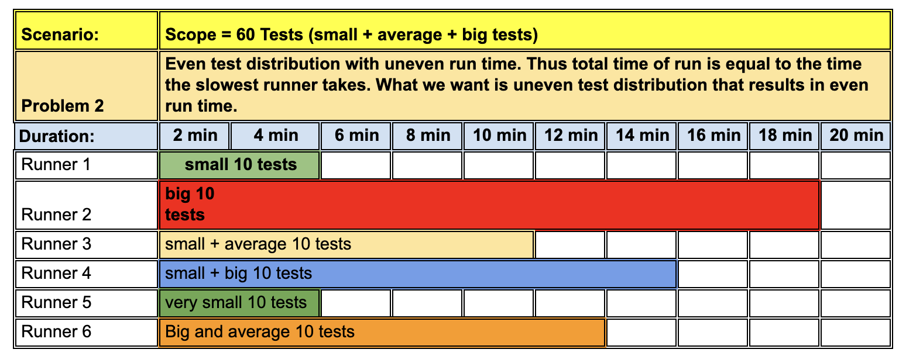
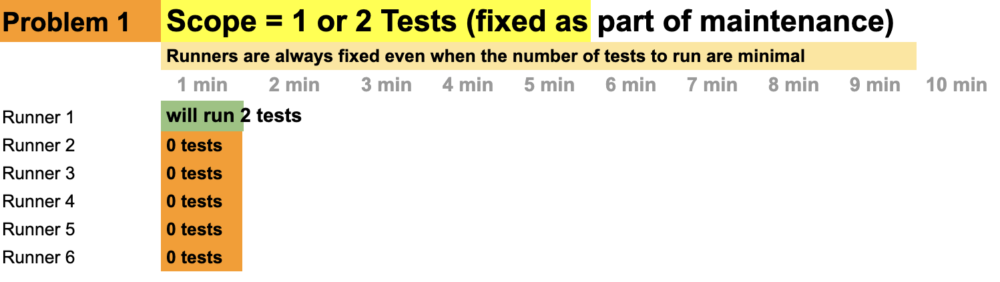
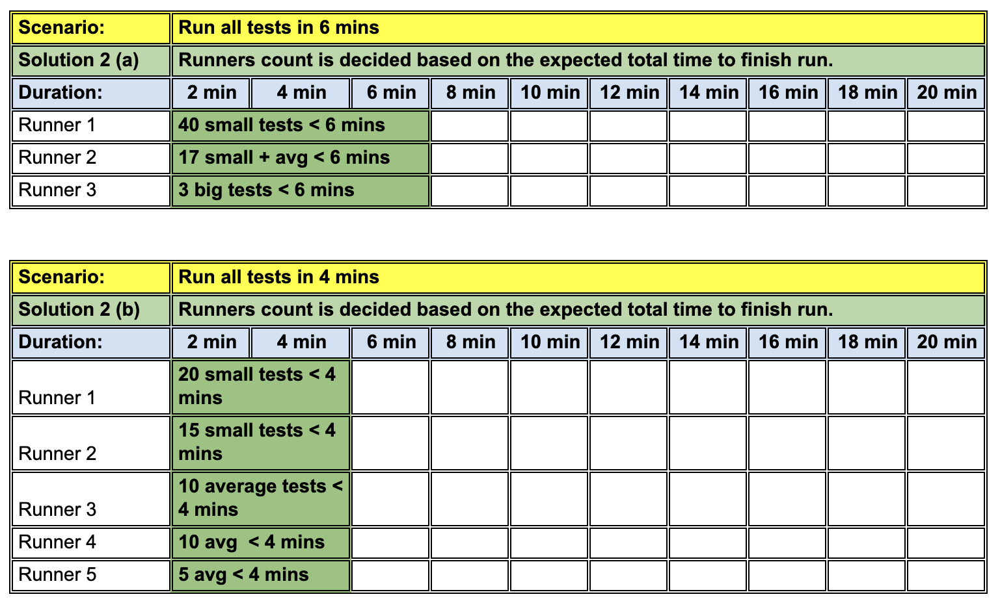
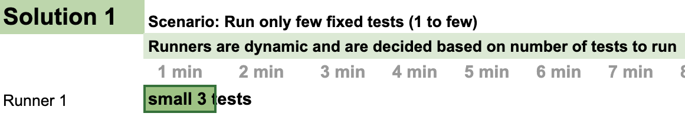

Problem Statement
Playwright provides a option to distribute tests on multiple machines with its Test Sharding option. However there are two main problems with it:
- Even though playwright sharding tries to evenly distributes tests, as explained here in the article about
Balancing Shards, in terms of execution time, not all tests take equal time.
And since playwright sharding does not keep a track of time each test takes, this means, there will be some runners that will finish early and some that will finish late. Eventually your total test run time will be bottlenecked due to the slowest running tests.
Often the only way team tries to bring down total execution time is by increasing the number of runners, which increases both the cost but also the waste per runner since not all runners are utilized to their full potential.

- Playwright provides a
Github Actions Example
to show how to define runners for sharding. However, since often the same reusable workflow is used to run all tests,
and test fixes, there are times, when the number of tests touched are very few, but the reusable workflow will still spin up all the runners.
This results into a lot of wasted resources and money.
NOTE: As mentioned in previous point, since team often tries to increase the runners to bring down execution time, it means, the waste is very high, if the team does not have a way to scale runners down, when only fixing a few broken tests.

Sharding is not aware of how much time each test takes.
No examples of dynamic scaling of runners
Consequences and results
-
Consequence: Teams do not run system tests as a part of their pull requests but after its already merged in the main branch.
Result: As a result, tests give false positives and often fail because of new changes and not because there are bugs in the code.
This corrodes the trust for tests in the team.
-
Consequence: QAs in the team hence often spend most of their time fixing these "false positives".
Result: As a result, this gives testers "Test maintenance fatigue" and heavily bring down their morale and their ability to have a real impact on the product.
QAs find themselves in this never ending cycle of fixing broken tests, that bring little value to the team and leave them with little time to actually test the new features or add new tests.
-
Consequence: Buying more infrastructure has diminishing results with increased costs.
As we saw earlier, with existing solutions, adding more infrastructure has a diminishing effect on overall test run time and has a direct relation to increased waste (inefficiencies) and costs.
Desired Solution
A desired solution would involve creating a dynamic test sharding mechanism that is aware of how much time each test takes and depending on the load of tests and desired total execution time, creates required runners at the run time.
This means, if we have a lot of tests to run, then based on the desired total execution time, we can create bundles of tests based on their run time, and create as many runners as required to cover all tests in the given time. In this model, one runner may run 20 small tests where another may run only 2 big tests. Where each runner, does not surpass the total execution time limit (of say 2 mins)
It also means, that if we only touch a few tests and want to finish them in 1 or 2 mins, then we only need to spin up the bare minimum runners to finish all tests in 1 or 2 mins.
Consequences and results
-
Consequence: Teams can now run their system tests as a part of their pull requests since now they control how long it should take for their test run to finish.
Result: As a result, developers get a feedback in their PR and can fix the broken tests as a part of their pull requests. This results into tests that gives true positives once they are merged in the main branch.
This should considerably improve the trust for tests in the team.
-
Consequence: Since maintenance is now distributed among all developers, QAs in the team actually have time to do more meaningful activities.
Result: By making everyone responsible for fixing the tests that are breaking due to their own changes, we create a model that scales better with time.
This eliminates the root cause for test maintenance fatigue. Not only developers get timely feedback on their breaking changes but now QAs also find time to test and explore the application, write missing automated tests, and mentor team members by taking workshops and reviewing pull requests
-
Consequence: We have a system that scales infra up or down based on the demand and scales well with test scope.
Result: Since our solution is time aware of each test, and dynamically scales infrastructure up or down based on test scope, we now have a system, where we pay for what we use, eliminate waste and still keep our test run time within our acceptable time limits.
Solution Design
Below is a explain of how the above solution works: The key components of this design are:
STATE.JSON
- This file should contain a map of each test case and the time it took to run on the local machine.
- The updated tests should run automatically when a developer tries to commit these tests (using pre-commit hooks).
- File should be automatially created after each test run (using a custom runner) that runs automatically after each run.
- And by committing this file automatically (using a post-commit hook).
A Custom GitHub action
- INPUTS:
- A custom github action that takes users wishes to finish test in (x mins).
- Takes the command to run
- Considers the cores of the runner machine to decide workers
- Considers the cores of the runner machine to decide workers
- REFERENCES
- Considers the state.json to undrestand time each test takes to finish
- Considers the cores of the runner machine to decide the workers that can be safely used for parallel run
- OUTPUTS
- A dynamic matrix strategy that gives runner count to run tests. ex: ["1","2", "3"]
- A test load distribution json document that gives a mapping of tests and their respectie projects to run under each runner
- The number of workers to use for parallel execution, based on cores of runners to use
- CALLER WORKFLOW:
- This workflow will use the above variables to run tests efficiently on different runners
- Create and publish a consolidated html report
Actual Solution
Here is the reference to the actual solution RunWright (a custom github action and caller workflow code example), that shows how different pieces come together to make it all work).
Reference
Reference spreadseheet: Spreadsheet